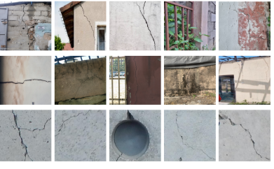
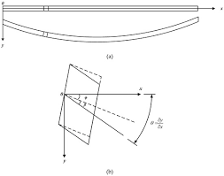
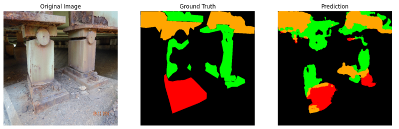

As the Lead Investigator of AfriCrack: Benchmarking Domain-Shift Robustness of Crack Segmentation Models in African Infrastructure, I led the project from research conception to publication, overseeing literature review, study design, dataset creation, model development, experimental evaluation, and scientific writing.
I coordinated the collection and pixel-level annotation of 1,000 crack images from Nigerian infrastructure and developed and evaluated convolutional and transformer-based semantic segmentation models, including the SegFormer Vision Transformer, using PyTorch. Our findings revealed an approximately 50% performance decline for models trained on non-African datasets such as SDNET2018, demonstrating the need for geographically representative datasets for AI-driven structural health monitoring.
Building on this work, my current research investigates computationally efficient Vision Transformer architectures that maintain segmentation accuracy while reducing computational cost, enabling real-time structural damage detection on resource-constrained edge devices.
The project was presented at the Weakly Supervised Computer Vision Workshop (2024), received an Honorary Mention at Deep Learning Indaba 2024, and was awarded First Runner-up at IndabaX Nigeria 2024.

I conducted a computational study titled Determination of the Natural Frequency and Mode Shape of Beams Using Analytical and Finite Element Methods with Python, investigating the dynamic response of beam structures under different boundary conditions.
I implemented analytical formulations based on the Rayleigh–Ritz method and the Principle of Virtual Work, and developed Python-based finite element routines to compute natural frequencies and mode shapes for configurations including clamp–clamp and simply supported beams.
This work strengthened my expertise in structural dynamics, finite element modeling, numerical simulation, and computational methods for engineering analysis, providing a foundation for applying data-driven approaches to structural health monitoring.

I conducted research on Multi-Region Corrosion Detection and Morphological Characterization Using Computer Vision, investigating automated approaches for corrosion severity assessment in civil infrastructure.
Through a comprehensive literature review, I identified challenges in existing vision-based corrosion assessment methods and developed a deep learning framework combining semantic segmentation and morphological feature extraction. I implemented and evaluated segmentation architectures, including SegNet and SegFormer, achieving up to 89% F1-score for corrosion region identification.
I further applied post-processing techniques, including connected component analysis and contour-based feature extraction, to quantify region-level geometric characteristics. These features were subsequently used to develop a machine learning model for automated corrosion severity estimation, advancing data-driven approaches for infrastructure condition assessment.